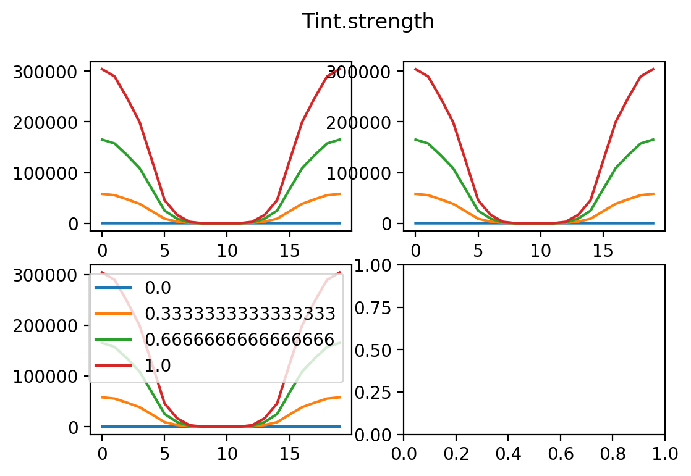
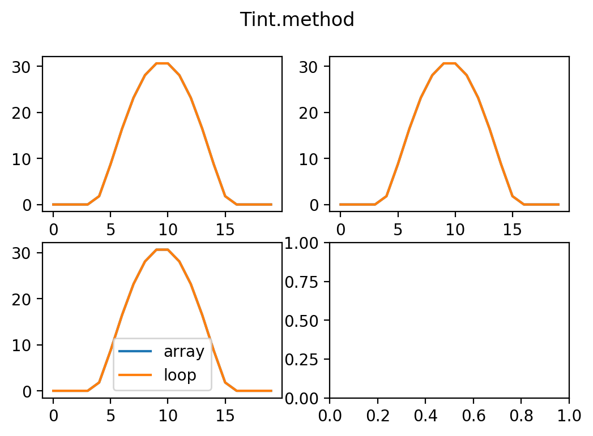

$ T_{:raw-latex:`\text{int}`} = :raw-latex:`\int {d\pmb{k}}`[{:raw-latex:`pmb{mu}`2:raw-latex:over 3}-{(:raw-latex:pmb{mu}`:raw-latex:cdot:raw-latex:`\pmb{k}`)`2:raw-latex:over `:raw-latex:pmb{k}`^2}] :raw-latex:`\eta[\rho(\pmb{p}+\hbar \pmb{k})-\rho(\pmb{p})] `:raw-latex:`qquad :raw-latex:text{where }`:raw-latex:eta `:raw-latex:text{ is Heaviside step func}` $
Initialize¶
import torch as tc
import numpy as np
gpu = tc.device('cuda:0' if tc.cuda.is_available() else 'cpu')
Funcs¶
consts = [
'x','y','z',
'kx','ky','kz',
'Tkin','TkinPrime',
'TintIntegrand',
]
variables = [
'rho','rhoPrime',
'Tint',
]
getTkin¶
def getTkin(o,x,y,z):
return x**2 + y**2 + z**2
getTintIntegrand¶
def getTintIntegrand(o,kx,ky,kz):
c = o.config['Tint']
mu = c['muVec']
i = o.mu2over3 - (mu[0]*kx +mu[1]*ky +mu[2]*kz)**2 / (kx**2+ky**2+kz**2)
return c['strength'] * i
make space¶
def makeSpace(p0,p1,Np):
x = y = z = np.linspace(p0,p1,Np)
x,y,z = np.meshgrid(x,y,z)
x = tc.from_numpy(x)
y = tc.from_numpy(y)
z = tc.from_numpy(z)
return x,y,z
def makeSpaceForTint(o):
c = o.config['space']
muVec = o.config['Tint']['muVec']
p0,p1,Np,Nk = c['p0'],-c['p0'],c['Np'],c['Nk']
shape = [Nk,Nk,Nk,Np,Np,Np]
x,y,z = makeSpace(p0,p1,Np)
x_ = tc.zeros(shape); x_[:][:][:] = x
y_ = tc.zeros(shape); y_[:][:][:] = y
z_ = tc.zeros(shape); z_[:][:][:] = z
k = tc.linspace(p0,p1,Nk)
kx = tc.zeros(shape)
ky = tc.zeros(shape)
kz = tc.zeros(shape)
for i in range(Nk):
for j in range(Nk):
for l in range(Nk):
kx[i][j][l] = k[i]
ky[i][j][l] = k[j]
kz[i][j][l] = k[l]
o.mu2over3 = (muVec[0]**2+muVec[1]**2+muVec[2]**2)/3
o.TkinPrime = getTkin(o,x_+kx, y_+ky, z_+kz).to(gpu)
o.Tkin = getTkin(o,x,y,z).to(gpu)
o.x,o.y,o.z,o.k = x.to(gpu),y.to(gpu),z.to(gpu),k.to(gpu)
o.kx,o.ky,o.kz = kx.to(gpu),ky.to(gpu),kz.to(gpu)
o.TintIntegrand = getTintIntegrand(o,kx,ky,kz).to(gpu)
o.Tint = tc.zeros_like(x).to(gpu)
o.rho = tc.zeros_like(x).to(gpu)
getRho¶
def getRho(o,T):
c = o.config['const']
muMinusT = c['mu'] - T
muMinusT[muMinusT<0] = 0
rho = tc.pow(muMinusT,1.5)
return rho
Tint¶
def getTintByArray(o):
Tint = tc.zeros_like(o.kx).to(gpu); Tint[:][:][:] = o.Tint
rho = tc.zeros_like(o.kx).to(gpu); rho[:][:][:] = o.rho
rhoPrime = getRho(o, o.TkinPrime + Tint)
stepFunc = rhoPrime > rho
Tint = o.TintIntegrand * stepFunc
return Tint.sum(0).sum(0).sum(0)
def getTintByLoop(o):
Tint = tc.zeros_like(o.x).to(gpu)
for kx in o.k:
for ky in o.k:
for kz in o.k:
TkinPrime = getTkin(o,o.x+kx,o.y+ky,o.z+kz)
rhoPrime = getRho(o,TkinPrime+o.Tint)
stepFunc = rhoPrime > o.rho
Tint[stepFunc] += getTintIntegrand(o,kx,ky,kz)
return Tint
Main class¶
class DPFTM(tc.nn.Module):
def __init__(self,config):
super(DPFTM,self).__init__()
self.config = config
makeSpaceForTint(self)
def forward(self):
c = self.config
for i in range(c['loop']['Imax']):
oldRho = self.rho
self.rho = getRho(self,self.Tkin + self.Tint)
if(tc.sum(tc.abs(oldRho-self.rho))<c['loop']['sumDiffRho']): break
if c['Tint']['method'] == 'array': self.Tint = getTintByArray(self)
elif c['Tint']['method'] == 'loop': self.Tint = getTintByLoop(self)
return self.rho.cpu().numpy()
Usage¶
run one test¶
import time
def test(config,label='undefined'):
print('start: '+label); start = time.process_time()
dpftm = DPFTM(config)
if tc.cuda.device_count() > 1: dpftm = tc.nn.DataParallel(dpftm)
dpftm.to(gpu)
result = {'config':config,'label':label,'rho':dpftm(),
'time':time.process_time() - start}
print('finished in {t:.2f}'.format(t=result['time']))
return result
save and plot¶
import pickle
import matplotlib.pyplot as plt
def save(results,savePath,filename):
#filename += time.strftime("%Y%m%d-%H%M%S")
with open(savePath+filename+'.pickle', 'wb') as handle:
pickle.dump(results, handle, protocol=pickle.HIGHEST_PROTOCOL)
def plot(results,savePath,filename):
mid = int(results[0]['config']['space']['Np']/2)
fig, ax = plt.subplots(2, 2,dpi=200)
for r in results: ax[0, 0].plot(r['rho'][mid][mid][:],label=r['label'])
for r in results: ax[0, 1].plot(r['rho'][mid][:][mid],label=r['label'])
for r in results: ax[1, 0].plot(r['rho'][:][mid][mid],label=r['label'])
ax[1, 0].legend()
fig.suptitle(filename); plt.savefig(savePath+filename+'.png'); plt.show()
run many tests¶
config0 = {
'space':{'p0':-5,'Np':20,'Nk':10},
'loop':{'Imax':100,'sumDiffRho':1e-3},
'const':{'mu':10},
'Tint':{'muVec':[0,0,10],'strength':0,'method':'array'},
}
testCases = {
'space':{
'p0':np.linspace(-30,-5,4),
#'Nk':range(10,40,10),
},
'Tint':{
'strength':np.linspace(0,1,4),
'method':['array','loop'],
},
}
from google.colab import drive
import copy
def testMany(testCases,savePath):
drive.mount('/content/drive')
for key1 in testCases:
for key2 in testCases[key1]:
results = []; filename = key1+'.'+key2
print('\n'+filename)
config = copy.deepcopy(config0)
for value in testCases[key1][key2]:
config[key1][key2] = value
results.append(test(config,str(value))) #'{s:.2f}'.format(s=value)
save(results,savePath,filename)
plot(results,savePath,filename)
savePath='/content/drive/My Drive/Colab Notebooks/DPFTMoutput/'
testMany(testCases,savePath)
Drive already mounted at /content/drive; to attempt to forcibly remount, call drive.mount("/content/drive", force_remount=True).
space.p0
start: -30.0
finished in 0.96
start: -21.666666666666664
finished in 0.96
start: -13.333333333333332
finished in 0.96
start: -5.0
finished in 0.94

Tint.strength
start: 0.0
finished in 0.94
start: 0.3333333333333333
finished in 42.76
start: 0.6666666666666666
finished in 42.09
start: 1.0
finished in 41.85

Tint.method
start: array
finished in 0.94
start: loop
finished in 1.20
